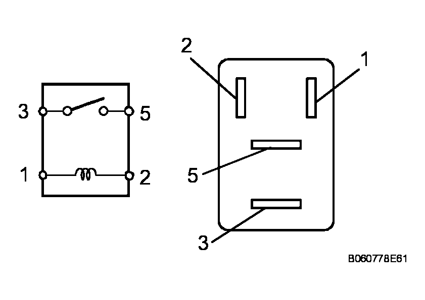

Headlight Relay: Inspection
- INSPECT HEADLIGHT RELAY
- Measure the resistance of the relay.
Standard resistance
TERMINALS RESISTANCE SPECIFICATIONTester Connection Specified Condition 3 - 5 10 kΩ or higher 3 - 5 Below 1 Ω
(When battery voltage is applied to terminals 1 - 2)
Courtesy of © TOYOTA, LICENSE AGREEMENT TMS1002If the result is not as specified, replace the relay.
- Measure the resistance of the relay.